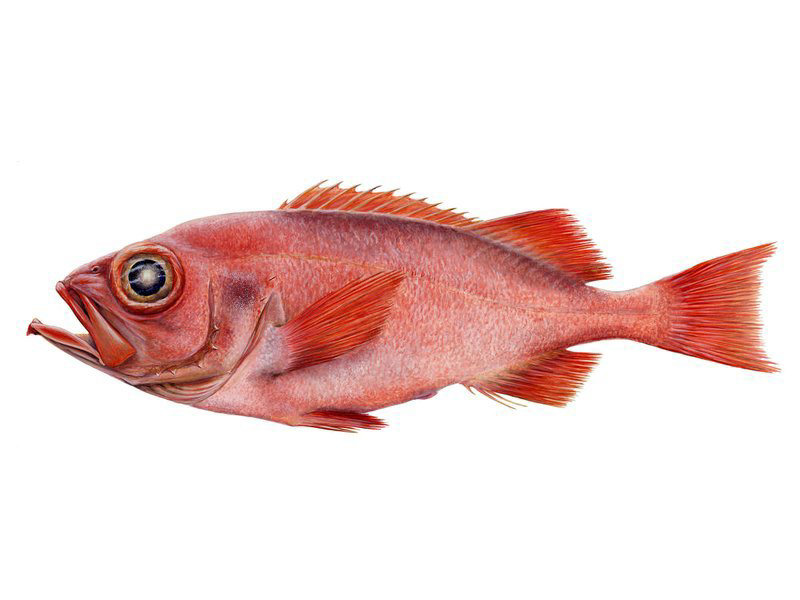

Aloza
Aloza to średniej wielkości ryba anadromiczna z rodziny śledziowatych (łac. Clupeidae). Występuje w Morzach: Bałtyckim, Śródziemnym, Czarnym i Egejskim oraz na wschodnich wybrzeżach Atlantyku ale na tarło wpływa do rzek.
Czytaj więcej
Barrakuda
Barrakuda (pot. barakuda) to duża, okoniokształtna, drapieżna ryba morska zamieszkująca tropikalne i subtropikalne wody mórz i oceanów całego świata.
Czytaj więcej

Boleń
Boleń to średniej wielkości ryba słodkowodna, jedyny drapieżny gatunek z rodziny karpiowatych. Występuje w większych i średnich rzekach nizinnych, w większych jeziorach i zatokach Europy Środkowej na wschód od Renu i na północ od Dunaju po Ural i Morze Kaspijskie.
Czytaj więcej
Cierniczek
Cierniczek to gatunek małej ryby z rodziny ciernikowatych. Zamieszkuje zbiorniki wodne o wodzie stojącej, zakola rzek, gdzie prąd rzeki jest znikomy, małe kanały o dnie mulistym ale spotka się go również w wodach słonych. Nie ma dużych wymagań co do jakości wody.
Czytaj więcej
Dorsz Atlantycki
Dorsz atlantycki (łac. Gadus morhua, nazwa zwyczajowa: dorsz, wątłusz) to drapieżna ryba morska i największy przedstawiciel rodziny dorszowatych. Występuje w północnej części Oceanu Atlantyckiego oraz w morzach północnej Europy.
Czytaj więcej
Flądra strzałozębna
Flądra strzałozębna (łac. Atheresthes stomias) to gatunek niedużej ryby morskiej z rodziny flądrowatych, zamieszkującej zimne wody północnego Oceanu Spokojnego.
Czytaj więcej
Głowacica
Głowacica to słodkowodna, drapieżna ryba z rodziny łososiowatych, która ze względu na swoje pierwotne występowanie w dorzeczu środkowego i dolnego Dunaju zwana jest łososiem Dunaju. Obecnie występuje również w Renie i jego dorzeczu.
Czytaj więcej

Jazgarz
Jazgarz to mała ryba z rodziny okoniowatych. Występuje praktycznie w całej Europie z wyjątkiem Półwyspu Kolskiego, północnej części Półwyspu Skandynawskiego, Szkocji, Irlandii, południowej Francji oraz półwyspów Pirenejskiego, oraz w Morzu Aralskim i Bałtyckim.
Czytaj więcej
Jesiotr
Jesiotr syberyjski to dwuśrodowiskowa - anadromiczna - ryba z rodziny jesiotrowatych (łac. Acipenseridae). Na wolności występuje u ujścia wielkich rzek w Azji północnej i środkowej (Rosja, Chiny, Kazachstan). W Bajkale tworzy formę słodkowodną. Hodowany w wielu miejscach na świecie.
Czytaj więcej

Karmazyn
Karmazyn mentela, w skrócie nazywany po prostu karmazynem, to gatunek średniej wielkości ryby morskiej zamieszkującej zimne wody północnego Atlantyku. Występuje od północno-zachodnich wybrzeży Europy przez wody oblewające Spitsbergen.
Czytaj więcej
Koza
Koza to gatunek małej ryby słodkowodnej z rodziny piskorzowatych zamieszkującej Europę z wyjątkiem Irlandii, Szkocji, Norwegii, północnej Szwecji, Finlandii, północnej Rosji oraz południowych półwyspów - Iberyjskiego, Apenińskiego oraz Bałkańskiego.
Czytaj więcej

Lipień
Lipień to gatunek niedużej ryby słodkowodnej z rodziny łososiowatych występująca na obszarze Europy od zachodniej Walii, Francji i Włoch do Morza Białego. Brak go w południowej Europie, północnej Skandynawii i Irlandii.
Czytaj więcej